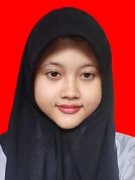

Rika Maharani Nurwidia
Admin Project
Tentang Saya
Saya seorang lulusan baru yang memiliki minat pada bidang administrasi dan pengarsipan. Berbekal kemampuan administrasi yang saya miliki, saya siap menyumbangkan waktu dan kompetensi saya di bidang ini.
Riwayat Pendidikan
- SMPN 5 KARAWANG (2017-2020) - Nilai rata-rata: 8.75
- SMAN 4 KARAWANG (2020-2023) - Jueusan IPA, Nilai rata-rata: 8.88
Skill/Keterampilan
- Microsoft Office Word
- Microsoft Office Excel
- Microsoft PowerPoint
- Manajemen Waktu
- Pengarsipan Dokumen
- Komunikasi
- Kerjasama Tim
Pengalaman Project
Project Kelompok Fisika Dasar - SMAN 4 KARAWANG (Juni 2022)
- Berkoordinasi dengan anggota kelompok untuk membuat laporan hasil penelitian
- Menyusun dan mempresentasikan hasil penelitian